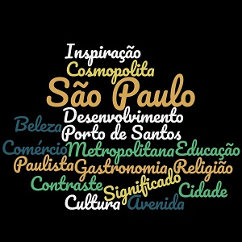

Fundada em 1554 por padres jesuítas, a cidade é mundialmente conhecida e exerce significativa influência nacional e internacional, seja do ponto de vista cultural, econômico ou político. Conta com importantes monumentos, parques e museus, como o Memorial da América Latina, o Museu da Língua Portuguesa, o Museu do Ipiranga, o MASP, o Parque Ibirapuera, o Jardim Botânico de São Paulo e a avenida Paulista, e eventos de grande repercussão, como a Bienal Internacional de Arte, o Grande Prêmio do Brasil de Fórmula 1, a São Paulo Fashion Week e a Parada do Orgulho LGBT.
🙋♀️❤️🏴BRSP⛱✈🆒🌭🚠🚗🛍️📚👪🐒🌲🌳👙💃🥁👍>🍹👀🗽Acima apresentado temos a nossa introdução onde podemos consultar uma breve história da cidade São Paulo e a minha experiência na mesma.
Um mapa mais rigoroso pode-nos mostrar a localização desta enorme cidade.
Existem ainda alguns elementos representativos desta cidade como elementos de multimédia , muitos disponiveis na internet.
Como todas as cidades, contam as suas histórias, também esta tem algumas informações para nos apresentar!
Por forma a ter um melhor acesso do aspecto geral, podemos regressar á página Home através deste link.
